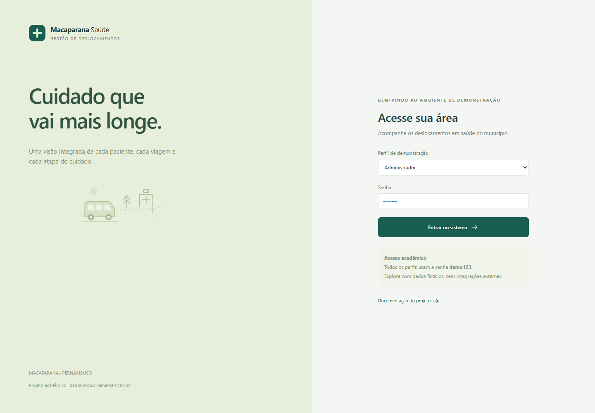
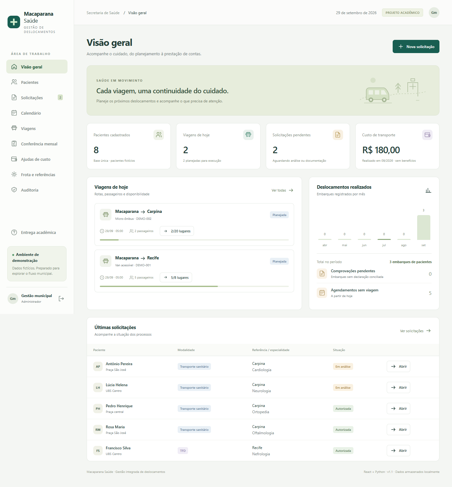
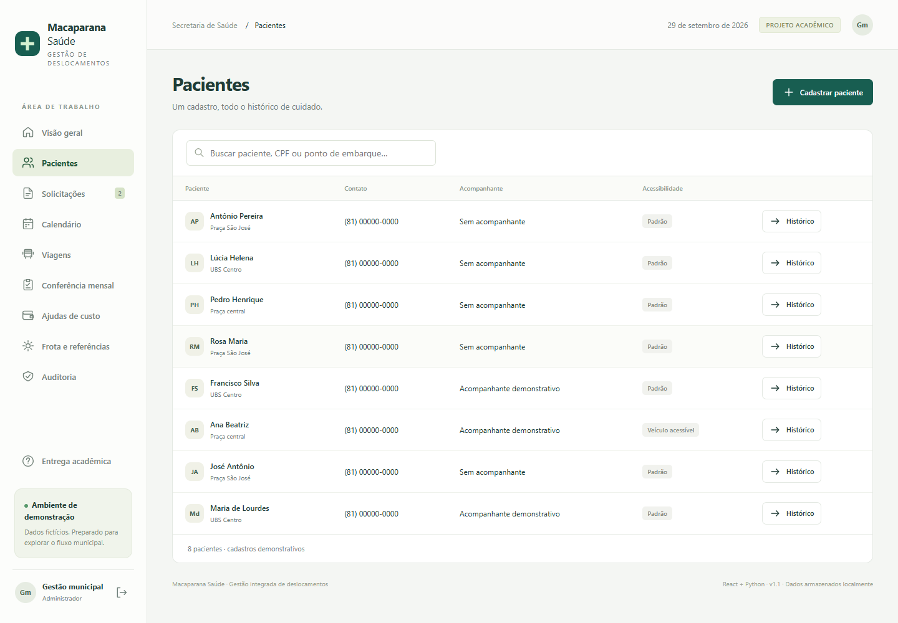
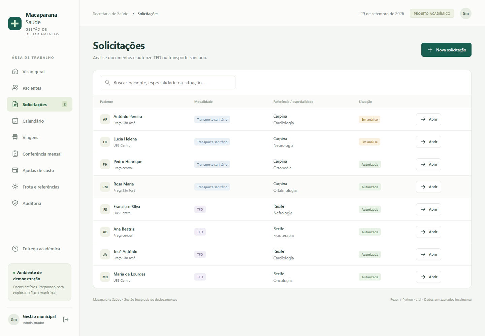
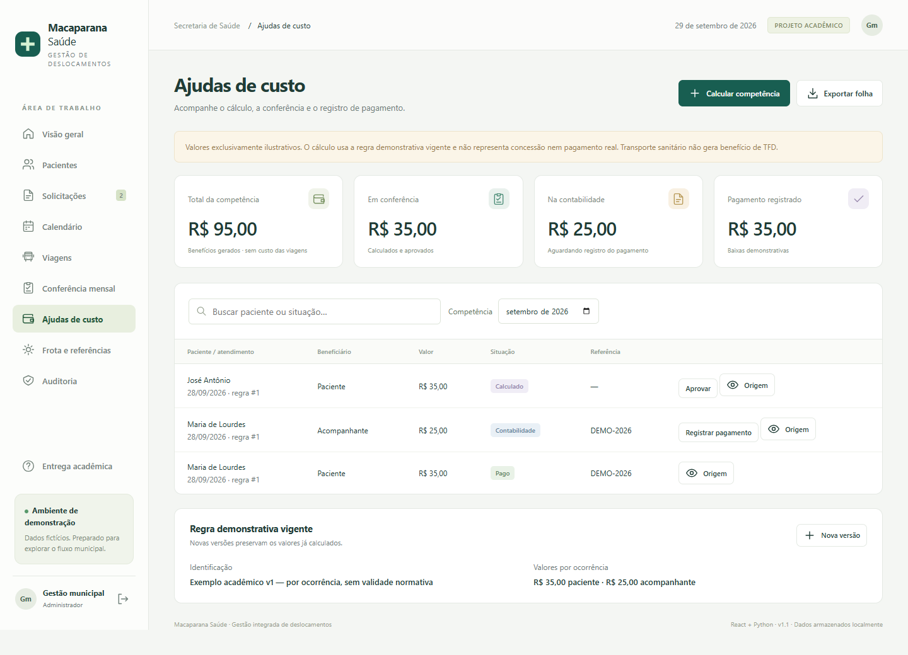
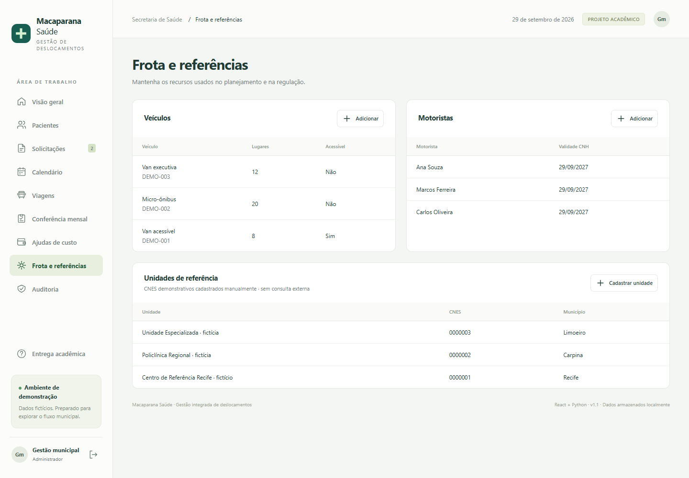
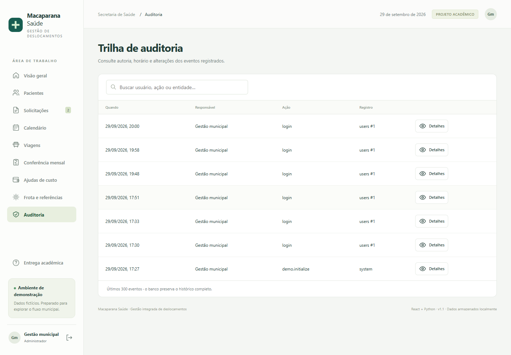
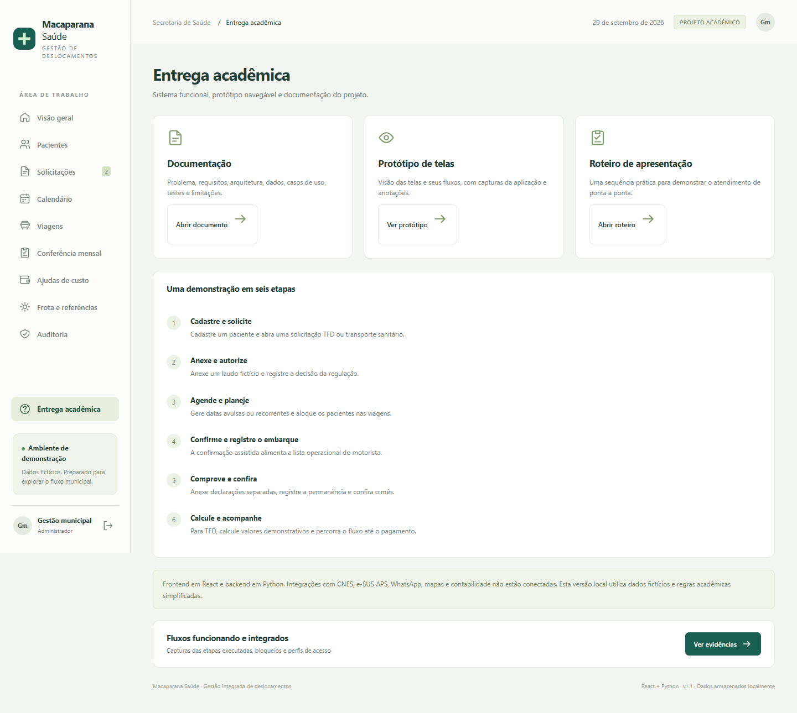
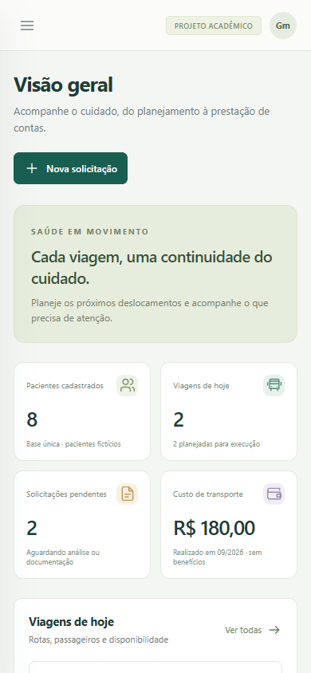

Projeto acadêmico · Tecnologia da Informação
Projeto acadêmico · Tecnologia da InformaçãoMacaparana
Saúde
Protótipo de telas
Interface navegável de alta fidelidade · capturas reais e comportamento esperado.
Curso não informado
Disciplina não informada
Professor não informado
Integrantes não informados
29 de setembro de 2026 · Versão 1.1
Demonstração com dados exclusivamente fictícios. Não representa implantação, validação jurídica ou homologação municipal.
Protótipo de alta fidelidade
As telas a seguir são capturas reais do sistema local. O protótipo interativo é a própria aplicação: execute iniciar.bat e acesse localhost:8000. A galeria HTML permite abrir cada imagem em resolução completa. Os dados e estados são demonstrativos.
Acesso e perfis
Entrada por perfil demonstrativo; sessão autenticada. A senha é pública porque a base é fictícia.

Experimente admin para o fluxo completo ou motorista para acesso operacional restrito.
Visão geral
Indicadores calculados dos registros, viagens de hoje e solicitações recentes.

Ver todas leva à operação das viagens; Nova solicitação inicia o processo.
Pacientes
Busca e cadastro central de pacientes, acompanhantes, endereço e embarque.

Histórico abre solicitações e ocorrências do paciente, sem duplicar seu cadastro a cada mês.
Solicitações
Modalidade, referência, especialidade e situação do processo.

Abrir permite anexar laudo, decidir e gerar calendário após autorização.
Calendário de tratamento
Ocorrências por competência, com distinção visual de TFD e transporte sanitário.

Clique na ocorrência para abrir vínculos e documentos. Agendar permite datas avulsas ou recorrências semanais.
Planejamento de viagens
Data, veículo, motorista, ocupação e situação.

O servidor valida conflitos, capacidade com acompanhante e acessibilidade na alocação.
Conferência mensal
Matriz compacta de pacientes e datas com indicador de comprovação.

Cada célula abre a origem. Acompanhante possui comprovação independente da declaração do paciente.
Ajudas de custo
Valores por competência, estágios financeiros e regra demonstrativa.

Aprovar, encaminhar e registrar pagamento são etapas distintas. CSV não é leiaute oficial.
Frota e referências
Recursos reutilizados no planejamento e unidades com CNES manual.

Cadastro local; não há consulta externa ao CNES nem validação institucional dos identificadores fictícios.
Auditoria
Usuário, horário, ação e registro afetado.

Detalhes exibe antes/depois e justificativa. A trilha não é um repositório imutável de produção.
Entrega acadêmica
Acesso à documentação, protótipo e roteiro pelo próprio sistema.

Os documentos também podem ser abertos diretamente na pasta docs.
Operação da viagem
Lista de passageiros, acompanhante, confirmação, embarque e dados de execução.

O motorista visualiza apenas suas viagens. Imprimir lista abre uma versão operacional sem dados clínicos ou bancários.
Visão responsiva
A interface adapta a navegação e os cartões para telas menores.

Verificada em largura de 390 px. Tabelas amplas têm rolagem dentro do contêiner; não há aplicativo nativo nem modo offline.